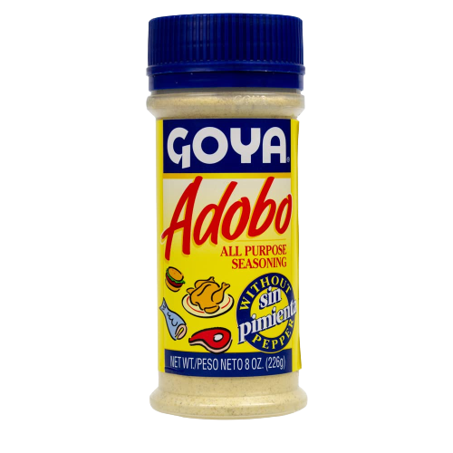

with the fire on high
about an aspiring chef whose held back by the responsibility of being a teen mom and the trauma of her past relationship. written by Elizabeth Acevedo. red reminds me of culture since its such a staple color of many flags. when it comes to passion, i also think of the same shade. our protagonist, Emoni provides such a mature perspective to read from while also maintaining the fire in her eyes.

iron widow
a fierce telling of the way the protagonist takes down the patriarchal dictatorship forcing women to conform. written by Xiran Jay Zhao. our protagonist, Wu Zetian, is the definition of wanting to see things burn. she will bark and bite at anyone who comes in her way. chinese culture also appreciates the color red so it's the perfect color for this.